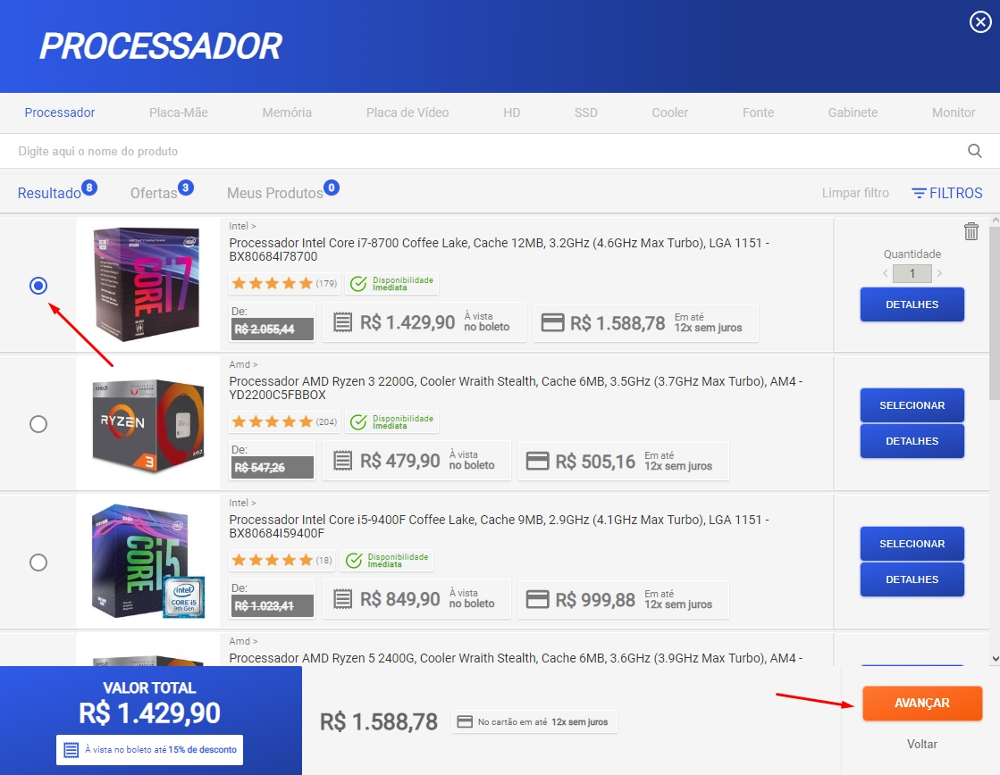
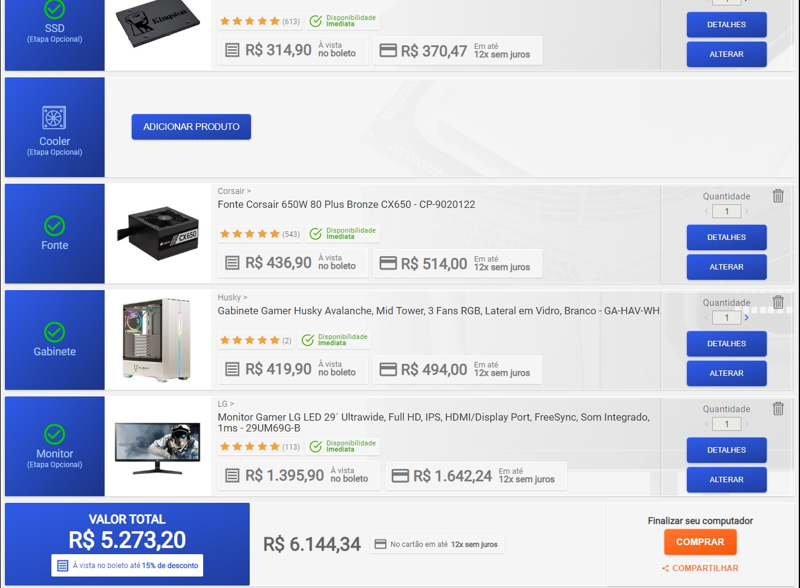

Montar um computador bom nunca foi uma tarefa fácil pois cada peça tem suas especificações e detalhes que se ignorados podem fazer de sua compra um desastre total. Além disso temos um fator importante que é a constante evolução que o mundo da informática sofre a cada ano. Pensando nesse detalhe a kabum uma das maiores lojas online de eletrônicos traz para curiosos e clientes uma ferramenta para montar computadores sem que você usuário se preocupe com eventuais erros, agora essa novidade faz parte de sua loja e-commerce.
Acessando esse link aqui, você vai entrar na página monte seu PC do site da kabum. Note que ao lado direito “uma janela” é mostrada, ela vai acompanhar todo o processo mostrando o valor final em tempo real assim como o valor parcelado em até 12x sem juros. Na mesma janela temos a opção de compartilhar seu orçamento via redes sociais como Twitter e Facebook, mais você deve está logado em sua conta da kabum para compartilhar.
Assim que você clicar no botão adicionar produto na primeira peça que é o processador aos poucos o usuário vai sendo apresentado as peças, ofertas e filtros para facilitar a escolha dos itens. Ao passo que você escolhe o Processador o botão “avançar” será mostrado. O algoritmo do site irá mostrar apenas peças compatíveis com as peças escolhidas anteriormente, por exemplo; se você escolher um processador AMD, as placas mães serão exibidas sendo elas compatíveis serão da AMD cujo soquete seja o mesmo do processador escolhido.
É possível pular peças que não são necessárias ou que o usuário não quer comprar. Deixando essas peças de lado o PC não será afetado. Na escolha o botão pular será mostrado. No entanto o algoritmo não irá deixar você ficar sem uma das peças principais para funcionamento do computador.
Assim entendemos que é possível montar quites simples onde teríamos processador, placa mãe, memória, fonte e gabinete. “Se bem que o gabinete não uma peça que faz parte de um quite simples”.
Os filtros ajudam você a encontrar as melhores ofertas do site, também ajuda na escolhe de marcas disponíveis na loja, assim como preço, o botão “detalhe” deixa a desejar deveria mostrar mais informações sobre produto. A escolha das peças segue uma linha simples, processador, placa mãe, memória, placa de vídeo (item que pode ser pulado) HD (item que pode ser pulado), SSD (item que pode ser pulado), Cooler (item que pode ser pulado) Fonte, Gabinete e Monitor.
Achamos o site muito intuitivo e prático, mais se o usuário não se atentar pode acabar escolhendo as peças mais caras, deveria haver dentro do botão detalhes uma opção onde mostraria os dados mais relevantes para o consumidor. Apesar de ser uma boa solução para montar computadores gamer, o foco principal é o consumidor que não entende tanto. No mais dessa nova alternativa que repetimos ter em outros sites.
POSTS MAIS POPULARES
CATEGORIA MAIS POPULARES
SOBRE NOS
SIGA NOS
© Todos os direitos reservados
Feito por Jonathas de Jesus